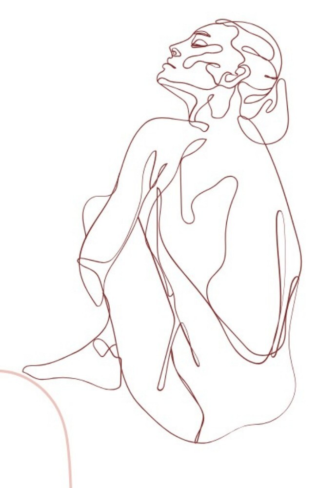
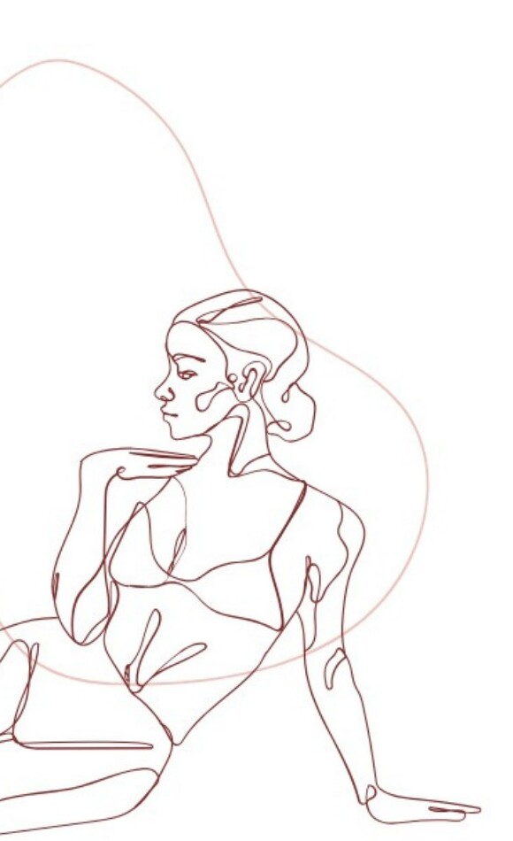
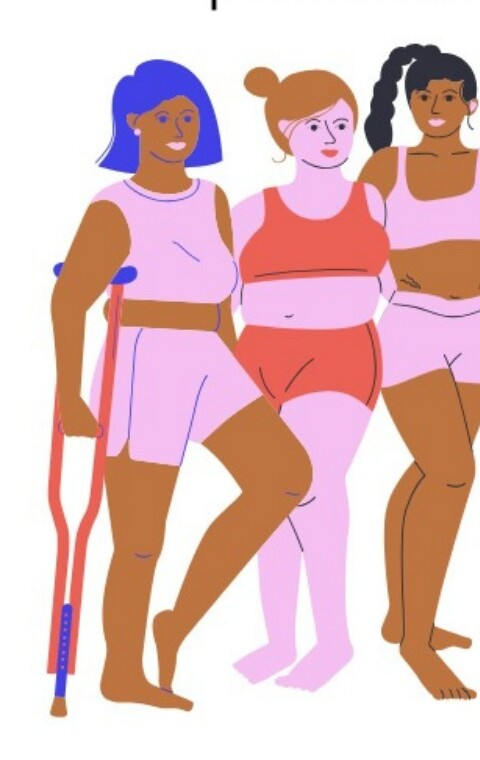
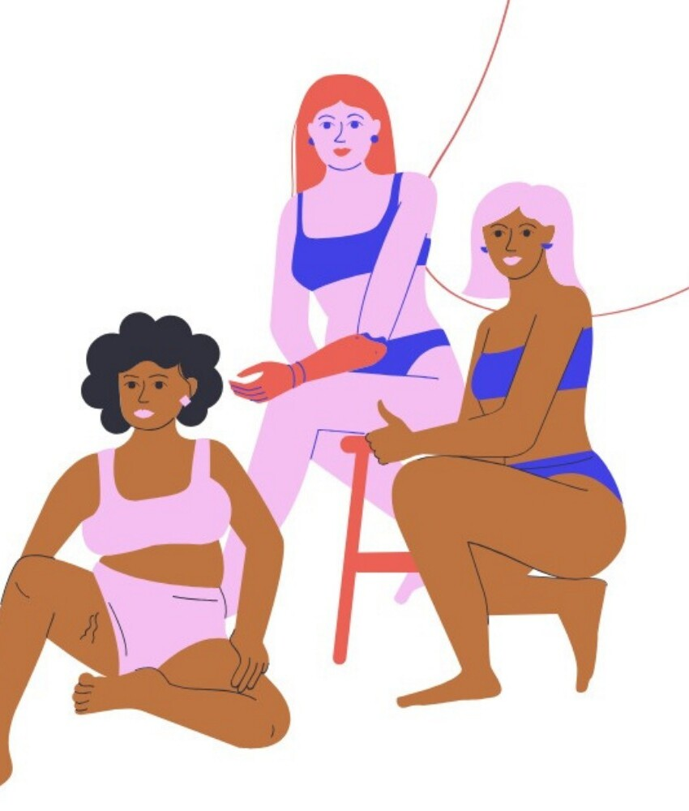
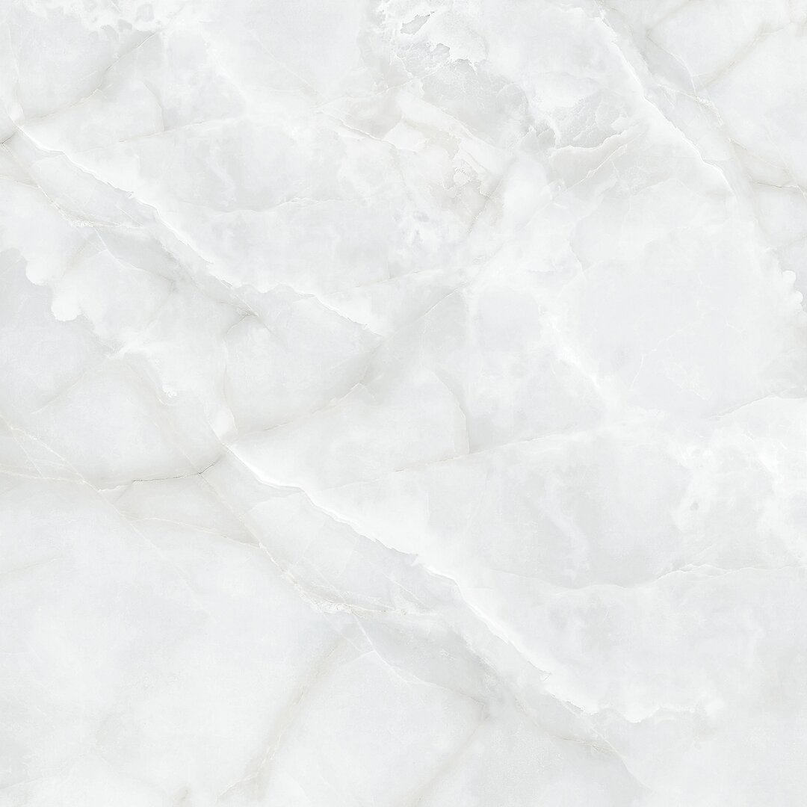
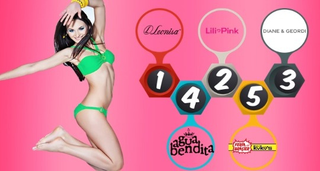
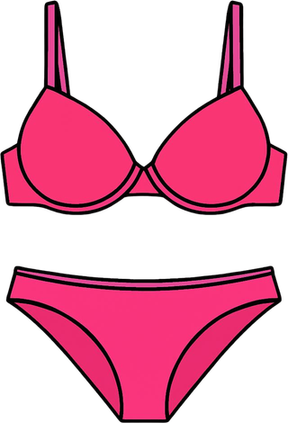
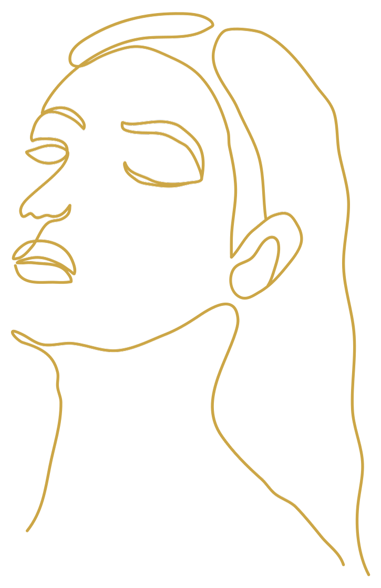
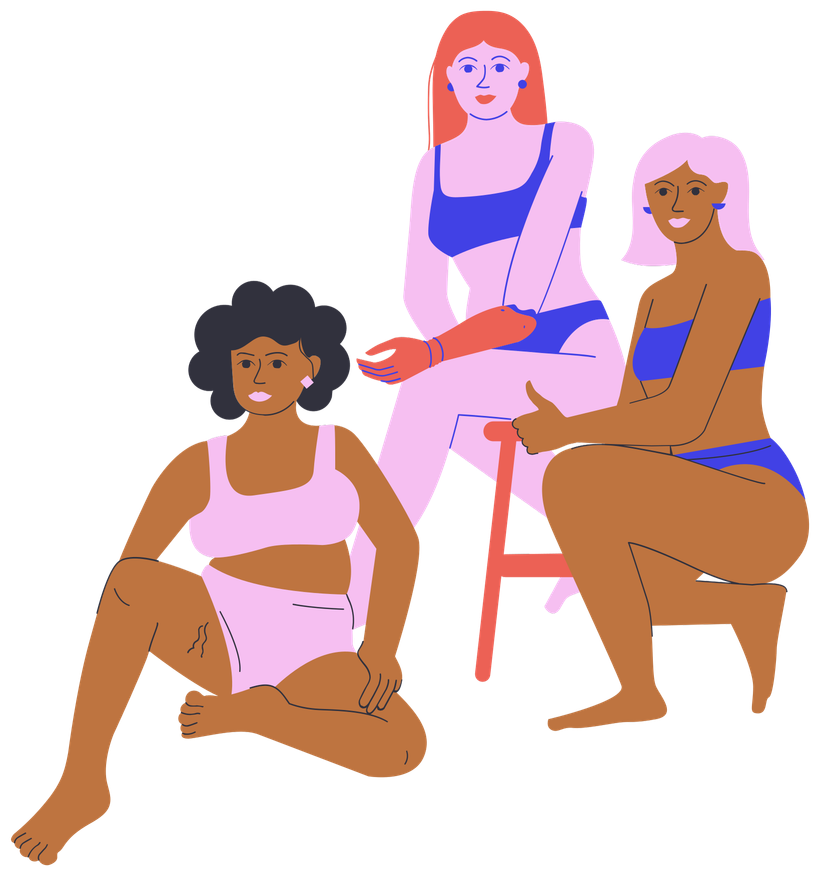

✦
COMERCIALIZACION DE PRODUCTOS EN LA MODA
LENCERÍA INCLUSIVA Y
PERSONALIZADA
Presentado por Quiceno Cuevas Danna Melissa
Y Danna Valentina Vargas Parra
20171
✦


PRODUCTO
SETS DE LENCERÍA
Esta marca ofrece lencería diseñada bajo un enfoque de inclusión comodidad y personalización. Elaborados con materiales de calidad y atención al detalle en acabados y confección
El producto se diferencia por su sistema de tallaje inclusivo, producción bajo pedido y posibilidad de personalización en ciertos diseños, permitiendo responder de manera más precisa a las necesidades corporales y preferencias individuales de las clientas.
Más que prenda íntima, el producto se concibe como una herramienta de expresión personal, seguridad y autoestima, integrando estética, funcionalidad y representación corporal real dentro de la industria de la moda íntima.
Cliente Real
El cliente real de esta marca está conformado principalmente por jovenés adultas, aunque se evidencia inerés en diferentes etapas de la vida. La lencería conecta con mujeres de distintas edades que buscan comodidad, diseño y representación. Se trata de consumidoras interesadas en moda, expresión personal y diseños originales. Están dispuestas a pagar un precio intermedio cuando perciben calidad, buen ajuste y autenticidad, entendiendo la lencería como un lujo accesible. Su motivación principal es sentirse sensuales, cómodas y representadas.
Valoran la seguridad en el proceso de compra y la posibilidad de verificar materiales y ajuste.
Datos de soporte
- Mayor concentración entre 18 y 30 años.
- Participación de mujeres mayores de 35 y 46 años en adelante.
- 85% manifiesta preferencia por asesoría personalizada.

Fuente: Encuesta propia aplicada a 34 mujeres durante el desarrollo del presente trabajo académico (2026)
https://forms.gle/3CC73HRqsCaWeXUv5
Cliente Potencial
Con base en los hallazgos de la encuesta, se identifican oportunidades en mujeres mayores de 40 años interesadas en redescubrir su sensualidad, así como en personas que atraviesan cambios corporales y requieren mayor acompañamiento en el ajuste y elección de talla. También se proyecta como segmento potencial a consumidoras que priorizan la comodidad y buscan diseños con identidad propia —más románticos, alternativos o diferenciados frente a las marcas convencionales—.
Adicionalmente, la marca puede atraer a personas que actualmente desconfían de las compras online, al ofrecer asesoría personalizada y acompañamiento en el proceso de elección, reduciendo la percepción de riesgo y generando mayor confianza.

La motivación principal de este segmento es encontrar una alternativa inclusiva, cómoda y auténtica.
Competencia
Directa
1 @venzihebrand (2025)
Rango de precios: 58.000---120.000
- Sets ajustables
- Manejan tallas grandes
- Personalización
- Sets lencería/vestidos/Babydolls/Conjuntos/cinturillas/ropa y lencería personalizada
- Similitud estética
- Venden prendas y complementos que la marca planea ofrecer a futuro
3 @mipijamiiaoficial (2022)
Rango de precios: 25.000---70.000
- Sets ajustables ( solo tienen S/M y L/XL)
- Sets lencería/Babydolls/Pijamas
- Sin posibilidad de comprar piezas por separado
- Venden prendas y complementos que la marca planea ofrecer a futuro
2 @Venus.lingerie4 (2021)
Rango de precios: 20.000---150.000
- Sets ajustables
- Manejan tallas grandes
- Sets lencería/vestidos/Arneses/Babydolls/cinturillas
- Similitud estética
- Venden prendas y complementos que la marca planea ofrecer a futuro
4 @ioxinalencería (2024)
- Sets ajustables pero en talla única
- Sets lencería/arneses
- Se pueden pedir tallas diferentes en piezas de sets
5 @ialmahillslingerie (2021)
- Ofrecen tallas grandes
- Variedad en diseños
- Sets lencería/disfraces/pijamas/babydolls

COMPETENCIA INDIRECTA
MARCAS LÍDERES
EN COLOMBIA
1.Leonisa
- Marca referente del sector, posicionamiento internacional y enfoque en modelación y ropa interior femenina.
2. Lili Pink
- Marca masiva con precios accesibles y fuerte presencia en centros comerciales
3. Diane & Geordi
- Enfoque en ropa interior básica, cómoda y comercial
4.Agua Bendita
- Marca Premium reconocida por su diseño; compite en el segmento de sensualidad y moda resort
5.Feria del brasier y SoloKukos
- Retail especializado en ropa interior con amplia cobertura nacional


FUENTE
Mall& Retail.(2026). Análisis del mercado de ropa interior en Colombia: cuáles son sus protagonistas. https://www.mallyretail.com/actualidad/mall-y-retail-boletin-531-noticia-2

💭 ¿QUÉ PIENSA Y QUÉ SIENTE?
- Quiere sentirse sexy pero cómoda al mismo tiempo
- Busca seguridad en su cuerpo
- Siente qué muchas marcas no la representan del todo (identificación promedio en una escala del 1 al 5 3/4)
- Desea una marca que realmente piense en su cuerpo (Rating 4,77 / 5)
- Valora calidad, diseño y comodidad en equilibrio.
- Tiene dudad sobre su talla
- Busca personalización (91.4% lo desea)
💬 ¿QUÉ DICE Y QUÉ HACE?
Dice qué:
- Quiere asesoría personalizada
- Busca buena relación calidad precio
- Que le gustaría personalizar
Hace:
- Compra cuando algo que realmente le gusta (compra emocional)
- Prefiere tienda física (85.3%)
- A veces compra piezas separadas por problemas de talla
- Frecuente experimenta que la prenda no le queda perfecta (mayoría entre 3 y 4 en escala del 1 al 5)
👂 ¿QUÉ OYE?
“Qué comprar online da desconfianza”
“La lencería suele ser costosa”
“Casi siempre termina incomodando”
“Es difícil encontrar buen tallaje”
Existe una barrera cultural hacia la compra online de lencería
✳️ ¿A QUÉ ASPIRA?
- Sentirse segura, libre y sensual
- Encontrarse una marca que piense en su cuerpo real
- Recibir asesoría personalizada
- Compra sets adaptados a su talla real
- Sentirse representada
Aspira validación corporal + experiencia personalizada
💔 ¿QUÉ LE DUELE?
- No encontrar su talla completa
- Qué no vendan piezas por separado
- Mala atención
- Desconfianza en compras online
- Qué la prenda no le quedé como esperaba
- Falta de inclusión real en las modelos
Frustración entre expectativa/realidad
👁️ ¿QUÉ VE?
- Modelos con cuerpos poco diversos
- Marcas que suelen usar tallaje limitado (S,M,L)
- Diseños que son cómodos pero poco sensuales, o sensuales pero incómodos
- Falta de innovación real en el mercado.
ENCUESTA REALIZADA
https://docs.google.com/forms/d/e/1FAIpQLScUxs4xPvxZW1c7tZOkrzMm3NijDJfV-9Z6GPLBripv15Pwbg/viewform?usp=header
¿CUÁLES SON LAS CARACTERÍSTICAS CLAVE DE TU IDEA DE NEGOCIO
QUE LA HACE POTENCIALMENTE RENTABLE EN EL MERCADO ACTUAL?
DEMANDA REAL
COMPROBADA
- Según encuesta realizada 91% desea personalización
- 60% valora asesoría en tallas
- 46% busca comodidad/sensualidad
Existe una necesidad insatisfecha clara
MODELO ESCALABLE
- Venta online (sin grandes inversiones físicas)
- Personalización (Mayor magen de ganancia)
- Compra de piezas separadas (puede haber + gasto por cliente)
ALTO VALOR EMOCIONAL
- Seguridad corporal
- Identificación con la marca
- Representación real
Genera fidelización y compra
DIFERENCIA
COMPETITIVA
- Tallaje inclusivo
- Asesoría personalizada
- Comodidad + Sensualidad en un mismo diseño
Propuesta distinta al mercado tradicional
OPORTUNIDAD
DIGITAL
- Alta desconfianza en las marcas online detectada
- Mejora en guías de talla y acompañamiento
Potencial de captación en canales online
ENCUESTA REALIZADA
https://docs.google.com/forms/d/e/1FAIpQLScUxs4xPvxZW1c7tZOkrzMm3NijDJfV-9Z6GPLBripv15Pwbg/viewform?usp=header
PROPUESTA DE VALOR
La propuesta consiste en el desarrollo de lencería personalizada e inclusiva, diseñada para adaptarse a la diversidad de cuerpos reales, respondiendo a la falta de representación y ajuste en las tallas estándar de la industria. Se prioriza el equilibrio entre estética y comodidad, mediante el uso de materiales adecuados, patronaje ajustado y procesos de prueba que garantizan prendas funcionales, cómodas y visualmente atractivas.
El modelo de producción bajo pedido permite crear cada prenda de acuerdo con las características específicas de la clienta, reduciendo desperdicios y evitando la sobreproducción. A esto se suma un proceso de asesoría personalizada que facilita la correcta toma de medidas, la elección de diseños y la adaptación del producto a las necesidades individuales, disminuyendo el margen de error y mejorando la experiencia de compra.
De esta manera, la propuesta no solo entrega un producto, sino una solución integral que combina personalización, inclusión y calidad, generando mayor satisfacción, confianza y conexión emocional con la prenda, lo que favorece la fidelización del cliente.
IDEA INNOVADORA
Esta marca ofrece lencería diseñada bajo un enfoque de inclusión comodidad y personalización. Elaborados con materiales de calidad y atención al detalle en acabados y confección
El producto se diferencia por su sistema de tallaje inclusivo, producción bajo pedido y posibilidad de personalización en ciertos diseños, permitiendo responder de manera más precisa a las necesidades corporales y preferencias individuales de las clientas.
IDEA INNOVADORA
La marca responde a necesidades reales del consumidor al ofrecer combinar la comodidad y sensualidad, con tallaje inclusivo y opciones de personalización. Busca que las clientas se sientan seguras, representadas y acompañadas durante su experiencia de compra.
IDEA INNOVADORA
El proyecto es factible tanto a nivel operativo como de mercado, ya qué puede desarrollarse con recursos accesibles, productos de proovedores locales.
Además, responde a tendencias actuales como la búsqueda de inclusión, personalización y compras más conscientes, lo que facilita su aceptación en el mercado. La estructura del equipo permite cubrir diseño, confección y comunicación, posibilitando una implementación progresiva y controlada del negocio
IDEA INNOVADORA
El modelo negocio es viable al atender una demanda identificada en el mercado y diferenciarse mediante asesoría personalizada, personalización y venta online. Además, permite generar ingresos sostenibles a través de mayor margen por personalización y aumento del ticket promedio.
IMPACTO Y PERMANENCIA EN EL MERCADO
La innovación de la marca genera un mayor impacto porque no se limita al producto, sino que transforma la experiencia completa de la lencería, integrando inclusión, asesoría personalizada y una conexión emocional con el cuerpo. Al responder a problemáticas reales como la falta de tallaje adecuado, la incomodidad y la baja representación, logra una propuesta significativa para el consumidor actual.
Además, tiene mayor probabilidad de mantenerse en el mercado a largo plazo, ya que se basa en necesidades constantes y no en tendencias pasajeras. Su enfoque en personalización, experiencia de usuario y construcción de marca permite generar fidelización, adaptación a cambios del mercado y una relación más duradera con sus clientes.
EVALUACIÓN DEL MERCADO OBJETIVO Y PROPUESTA DE VALOR
Después de validar la segmentación del mercado mediante el uso de herramientas de inteligencia artificial y datos oficiales como los del DANE, mi percepción sobre el público objetivo no cambió de manera radical, pero sí se volvió más precisa.
Inicialmente, el enfoque estaba centrado principalmente en el diseño y el patronaje como elementos diferenciadores; sin embargo, este análisis permitió entender que, más allá del producto en sí, el verdadero valor está en la experiencia de asesoría personalizada.
Dado que el mercado es amplio y diverso, se evidencia que cada clienta tiene necesidades, cuerpos y expectativas distintas, lo que hace fundamental desarrollar una estrategia de asesoría eficiente y estructurada. Esta debe permitir una comunicación asertiva que facilite la toma de medidas, la personalización del diseño y la correcta interpretación de las necesidades del cliente, reduciendo así el margen de error en cada pedido. Además, esta interacción no solo cumple una función operativa, sino que también contribuye a construir una relación cercana con la clienta, fortaleciendo su confianza en la marca y aumentando la probabilidad de recompra.
Finalmente, a partir del análisis realizado, considero que sí existe un mercado suficientemente amplio y segmentable que permite afirmar la viabilidad del negocio, especialmente al enfocarse en un nicho que valora la inclusión, la personalización y la experiencia de compra.

FOCUS GROUP
PREGUNTAS INTRODUCTORIAS
¿Han comprado lencería recientemente? ¿Con qué frecuencia lo hacen?
P1: Compro cuando veo algo que me gusta, no muy seguido.
P2: Más que todo en ocasiones especiales.
P3: No compro tan seguido porque me cuesta encontrar algo que me quede bien.
P4: Compro cuando necesito, pero no es tan frecuente.
P5: Solo cuando realmente veo algo que me gusta mucho.
P6: No compro mucho porque a veces no me siento cómoda con lo que encuentro.
¿Qué es lo que más valoran al comprar lencería?
P1: La comodidad, definitivamente.
P2: Que se vea bonita pero que también sea cómoda.
P3: El diseño, pero si no es cómoda no la uso.
P4: Que me quede bien, eso es lo más importante.
P5: La calidad de la tela.
P6: Que no me incomode durante el día.
PREGUNTAS DE PROFUNDIZACIÓN
¿Cómo quieren sentirse cuando usan lencería?
P1: Sexy pero cómoda al mismo tiempo.
P2: Segura de mí misma.
P3: Cómoda, sin estar acomodándome todo el tiempo.
P4: Libre, que no me apriete.
P5: Elegante pero relajada.
P6: Que me haga sentir bien conmigo misma.
¿Qué problemas han tenido con la lencería actual?
P1: Que los sets no me quedan completos.
P2: No encontrar mi talla exacta.
P3: Que terminan siendo incómodos después de un tiempo.
P4: Poca variedad en diseños.
P5: Mala calidad en algunos productos.
P6: Que no hay opciones personalizadas.
ENCUESTA REALIZADA:
https://docs.google.com/forms/d/e/1FAIpQLScbEF2qJQWfVubeJ8xzILNxcxs4QADX0QWz3Rrv8LIRK8YZEA/viewform?usp=header
FOCUS GROUP
Si pudieran cambiar algo de las marcas actuales, ¿qué sería?
P1: Que sean más cómodas pero igual de bonitas.
P2: Más variedad de tallas.
P3: Poder comprar las prendas por separado.
P4: Mejor calidad en los materiales.
P5: Más opciones de estilos.
P6: Que se adapten más al cuerpo real.
PREGUNTAS DE SEGUIMIENTO
¿Por qué creen que es importante que la lencería se adapte al cuerpo real?
P1: Porque cada cuerpo es diferente.
P2: Porque no todas encajamos en tallas estándar.
P3: Porque mejora la comodidad.
P4: Porque te hace sentir más segura.
P5: Porque evita incomodidades.
P6: Porque realmente se siente pensada para ti.
¿Comprarían una marca que ofrezca lencería personalizada con asesoría?
P1: Sí, totalmente.
P2: Sí, me daría más confianza.
P3: Sí, sobre todo por el tema de tallas.
P4: Sí, si el proceso es claro.
P5: Sí, me parece necesario.
P6: Sí, porque siento que no hay muchas opciones así.
PREGUNTA DE CIERRE
¿Qué haría que confíen en una marca de lencería?
P1: Buena asesoría en tallas.
P2: Atención personalizada.
P3: Que muestren cuerpos reales.
P4: Buena calidad.
P5: Que la comunicación sea clara.
P6: Que realmente se adapte a mí.
TABULACIÓN DE RESPUESTAS
💭 ¿QUÉ VALORAN AL COMPRAR LENCERÍA
RESPUESTAS IDENTIFICADAS:
Comodidad= 4 participantes
Diseño + comodidad = 2 participantes
Calidad = 1 participantes
AGRUPACIÓN POR SIMILITUD:
- Comodidad (directa o combinada) = 6 respuestas
- Diseño = 2 respuestas
- Calidad = 1 respuesta
La comodidad se posiciona como el factor más relevante en la decisión de compra, ya que incluso quienes valoran el diseño lo subordinan a que la prenda sea cómoda. Esto evidencia que, aunque la estética es importante, no es suficiente por si sola si no arantiza bienestar durante el uso. La calidad aparece como un factor secundario, lo que sugiere qué el cliente la percibe como algo esperado, pero no necesariamente diferenciador.
CONCLUSIÓN: El consumidor prioriza la comodidad funcional por encima de o visual, lo cual se alinea directamente con la propuesta de la marca
💬 ¿CÓMO QUIEREN SENTIRSE AL USAR LENCERÍA?
RESPUESTAS IDENTIFICADAS
- Sexy + Cómoda = 3 participantes
- Segura = 2 participantes
- Libre/Sin comodidad = 1 participante
AGRUPACIÓN POR SIMILITUD
- Comodidad y libertad = 4 respuestas
- Seguridad y confianza = 2 respuestas
- Estética (Sensualidad) = 3 respuestas
Las repuestas reflejan que el uso de lencería no solo responde a una necesidad funcional, sino también emocional. Existe un interés claro en sentirse atractiva, pero no a costa de la incomodidad. La seguridad personal aparece como un resultado directo de una prenda que se ajusta bien al cuerpo.
CONCLUSIÓN: El valor del producto debe centrarse en un equilibrio entre estética, comodidad y bienestar emocional.
TABULACIÓN DE RESPUESTAS
💭 ¿QUÉ PROBLEMAS HAN TENIDO CON LA LENCERÍA ACTUAL?
RESPUESTAS IDENTIFICADAS:
- Mal ajuste/tallas incorrectas= 2 participantes
- Incomodidad = 2 participantes
- Falta de variedad = 1 participante
- Falta de personalización = 1 participante
AGRUPACIÓN POR SIMILITUD:
- Problema de ajuste/talaje= 3 respuestas
- Incomodidad = 2 respuestas
- Limitación de oferta (variedad/personalización) = 1 respuesta
El principal problema identificado es el ajuste, lo cal impacta directamente en la comodidad. Esto evidencia una falla estructural en el mercado actual, donde las tallas estándar no responden a la diversidad corporal. Además, la falta de personalización y variedad refuerza la percepción de que el consumidor no encuentra soluciones adaptadas a sus necesidades.
CONCLUSIÓN: Existe una oportunidad clara para propuestas que integren tallaje real y personalización, resolviendo problemas recurrentes del mercado.
💬 ¿QUÉ CAMBIARÍAN DE LAS MARCAS ACTUALES?
RESPUESTAS IDENTIFICADAS
Más comodidad sin perder estética = 2 participantes
Tallaje inclusivo = 2 participantes
Personalización = 1 participante
Mejor calidad = 1 prticipante
AGRUPACIÓN POR SIMILITUD
- Comodidad + estética = 2 respuestas
- Inclusión en tallas = 2 respuestas
- Personalización = 1 respuestas
- Calidad = 1 respuesta
Las repuestas refuerzan los hallazgos anteriores: el consumidor no busca elegir entre verse bien o sentirse cómodo, sino tener ambas cosas. La inclusión de tallas aparece como una necesidad importante, lo que indica qué el mercado actual aún no cubre completamente esta demanda.
CONCLUSIÓN: El mercado presenta una brecha en propuestas que integren comodidad, estética y adaptación al cuerpo real.
TABULACIÓN DE RESPUESTAS
💭 ¿QUÉ GENERA CONFIANZA EN UNA MARCA?
RESPUESTAS IDENTIFICADAS:
- Asesoría personalizada= 3 participantes
- Atención al cliente = 2 participantes
- Representación de cuerpos = 1 participante
AGRUPACIÓN POR SIMILITUD:
- Acompañamiento personalizado= 3 respuestas
- Experiencia de servicio= 2 respuestas
- Identificación con la marca = 1 respuesta
La confianza no se construye únicamente desde el producto, sino desde la experiencia. La asesoría personalizada se posiciona como el principal factor, lo que indica que el cliente necesita guía para tomar decisiones, especialmente en productos donde el ajuste es clave.
CONCLUSIÓN: La asesoría es un elemento estratégico que reduce incertidumbre y aumenta la intención de compra.
💬 ¿COMPRARÍAN UNA MARCA DE LENCERÍA PERSONALIZADA?
La totalidad de las participantes mostró disposición hacia una propuesta personalizada, lo cual representa un indicador fuerte de aceptación. Esto valida que el mercado está abierto a soluciones diferentes a las tradicionales.
CONCLUSIÓN: Existe una aceptación total del concepto, lo que respalda la viabilidad de la idea de negocio.